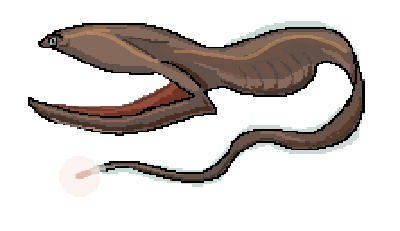

Viperfish
Sleek and silvery, the Viperfish has teeth that are so large it can never close its mouth, instead impaling prey upon them.
AnglerFish

The massive female Anglerfish drifts endlessly with its permanently attached mate, attracting prey with its glowing lure.
Gulper Eel
Essentially little more than a cavernous mouth and a digestive tract, the Gulper Eel can swallow prey larger than itself.